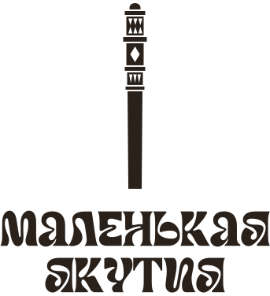
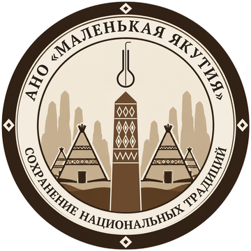

Павильон якутских мастеров в Казани
- ТелеграмНовости павильона и мастеров
- ВКонтактеФото, афиша, мастер-классы
- МаксКанал и связь с нами
- RuTubeВидео о мастерах и их работе
- YouTubeТе же видео
Где мы
Казань, ул. Московская, д. 2, ЦУМ, павильон 110
Открыть на карте
АНО «Маленькая Якутия»
Сохранение национальных традиций